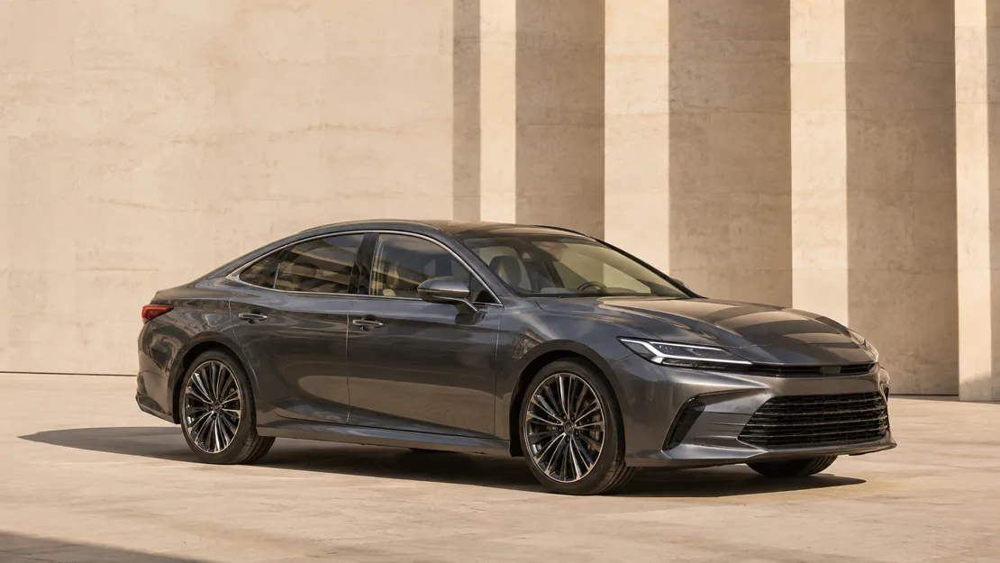
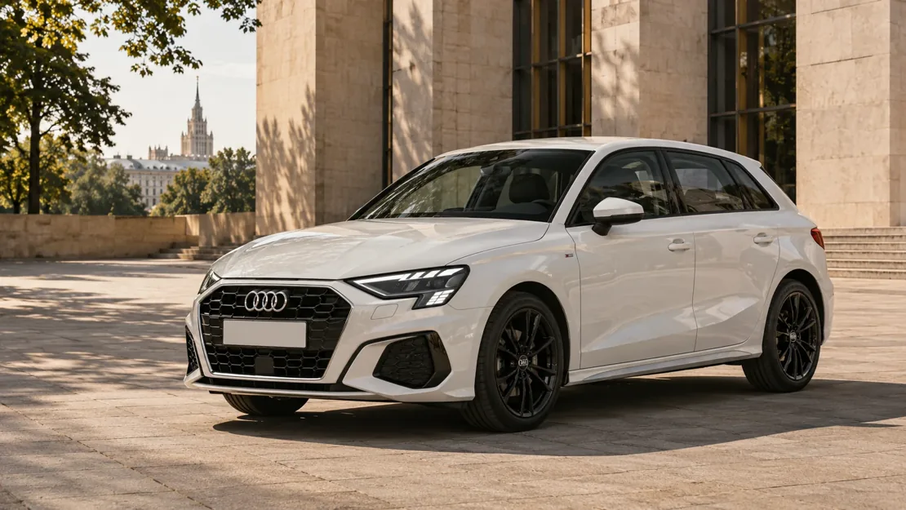

Седан
Удобен для тех, кто собирается водить семейный или рабочий седан и хочет лучше чувствовать расстояние до бордюра и соседних машин.
Для практики
Заезд в парковочное место, разворот и остановка у обочины.
Посадка, обзор и габариты ощущаются по-разному. Выберите класс, который ближе к вашим повседневным поездкам.

Удобен для тех, кто собирается водить семейный или рабочий седан и хочет лучше чувствовать расстояние до бордюра и соседних машин.
Заезд в парковочное место, разворот и остановка у обочины.

Подойдёт, если основные поездки проходят по тесным дворам и улицам с плотной парковкой. Небольшой кузов помогает быстрее освоиться с габаритами.
Движение на малой скорости, поворот в узком проезде и выезд с парковки.

Для тех, кто планирует ездить на машине с высокой посадкой. Поработаем с обзором вокруг передних стоек и положением кузова в полосе.
Настройка зеркал, проезд поворотов и парковка между автомобилями.